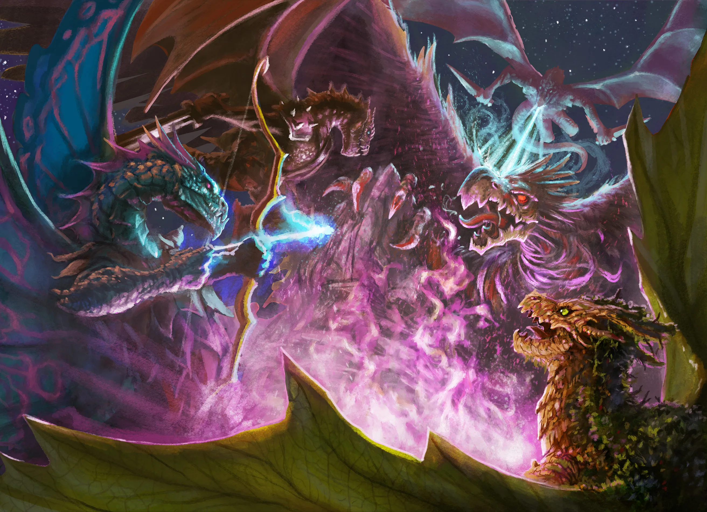
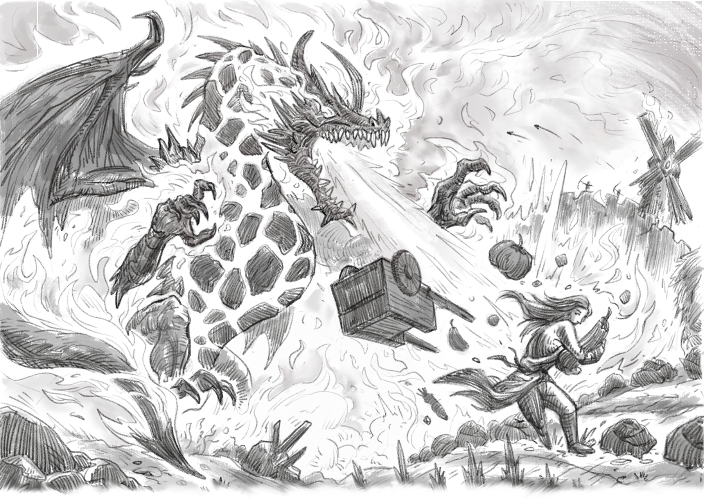
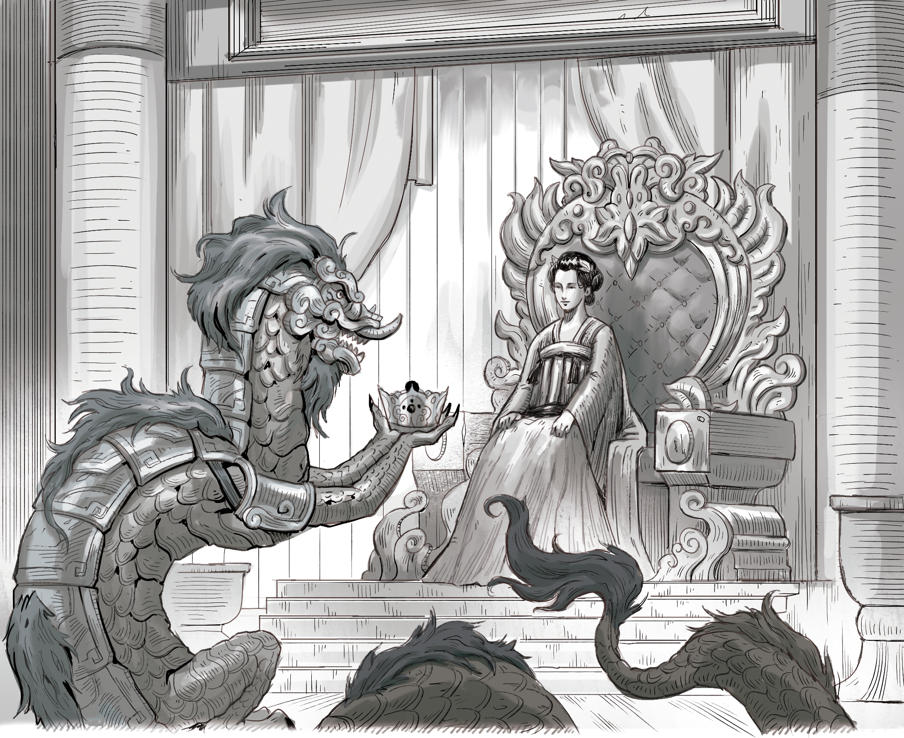

当你的整个人生就是一场战斗时，战场是否便是你真正的归宿？一部分永光战龙或许抱有这样的想法；但当我向传统派战龙请教它们的生活方式与内心感受时，却发现只有极少数认同这一观点。尽管它们或许会在沙场上度过漫长岁月，但那终究只是“工作”――或者顶多像习惯把狩猎当成游戏的狩猎龙那样，算作一种“消遣”。每当想要放松休憩时，它们便会返回自己的巢穴，寻觅片刻宁静与安详。这份独处有助于它们省思沙场征伐的艰辛，沉入内心的冥想，从而更好地维系坚韧的意志，免于因长期浸淫在战火与无休止的暴力中而陷入任何生灵都难免遭受的心理创伤。
话虽如此，奔袭中的战龙往往势不可挡，而静息时的战龙也时刻保持着高度警觉，留意着周遭的一切风吹草动，随时准备在必要之时再度冲向战阵缺口。一位身为哲学家的传统派督军龙曾写下一首名诗，探讨的正是这种二元割裂――战龙在巢穴中安详沉眠的静谧，与其征战日常里沙场厮杀的狂暴喧嚣之间的微妙张力：
“静默黄金环拥，我沉入酣眠。
睁开双眸，我看见
遍野赤红。我听见
寒鸦嘶鸣。我嗅见
死亡恶臭。我咆哮，
挥动利刃。我劈开
铮铮白骨。惨嚎四起。我眨眼，
一念之间重返故地。
安宁又静谧。我打着哈欠，
舒展疲惫的双翼。我不禁思索：
哪一个，才是我梦中的天地？
哪一个，才是我栖身的现实？”
――督军龙梅纳克塞南德雷克斯
这首诗道出了哪怕是战龙的心智，也会如何被这两种针锋相对的现实――极致安宁的世界与极致暴力的世界――撕裂为两半，令它们觉得自己生命中的一半不过是转瞬即逝的幻梦，另一半才是真正的现实。问题在于，究竟哪边是梦，哪边是真？它们究竟是在巢穴家中才真正清醒，还是在沙场之上才真正活着？每一条巨龙心中都有着不同的答案。

纵使我机关算尽、周密筹划，也未能轻易觅得亲眼观摩传统派狂怒龙实战的机会。鉴于它们的狂暴发作毫无规律可言，且平日里总是竭力远离尘嚣，想要提前排期进行实地观测，简直无异于妄图把闪电装进瓶子里。尽管如此，为了使这部著作臻于完备，我仍觉得有必要尽我所能搜集一切可用资料。于是，我游历了多处曾见证过狂怒龙盛怒肆虐的地区，尽力寻访最可靠的信源――哪怕那些往事早已迅速演变成了神话与传说。就连亲历者的目击证词听起来也疑点重重，不同证人各自添油加醋的夸张细节彼此抵牾，让其中的水分一目了然。
面对这般困境，一位享誉盛名的学者兼研究者该如何是好呢？说来惭愧，尽管针对这些失真传闻与事件本身极低的幸存率，我原本拟定了好几套沙里淘金的方案与计策，但最终帮上大忙的既不是我令人钦佩的巧思，也不是我的过人机智。不，纯粹是因为运气……好吧，或许是运气加上持之以恒的毅力；就好比在任何领域里，勇于多方尝试的人，总比畏首畏尾、连试都不敢试的人拥有更多成功的机会。
当时，我正试图在某处乡野地区梳理过去数十年间多起相互矛盾的狂怒龙暴走记述，远处却骤然传来一声巨响。等我火速赶往声源处时，映入眼帘的竟正是一头彻底失控的狂怒龙在焚烧一座小农庄！
虽然这一幕对我而言堪称千载难逢的观察良机，但我深知自己绝不能就这样高悬天际，摆出一副龙眼旁观的超然姿态奋笔疾书――绝不能在惨剧正于眼前上演、眼看就要把如此多的重要目击证人屠戮殆尽的时候袖手旁观！于是，诸位英勇的笔者做出了一件对大多数学者而言极不明智、甚至在部分同行眼中形同大忌的举动：我出手干预了。
我俯冲而下，小心翼翼地避开狂怒龙的种种攻势与奇特能力，尽可能多地协助村民撤离逃生。此举恰巧让我坐上了这场大戏的最前排雅座，还赢得了村民们的千恩万谢，足以换来我想做多少就做多少的访谈机会，甚至绰绰有余。作为一天的收获而言，着实不赖。最终，那头狂怒龙的怒火总算燃尽消退了――那转变干脆利落得简直就像拉下了一根操纵杆或是激活了一支魔杖：她的整副神情在一瞬间判若两龙，随即振翅疾飞而去，飞行的姿态与盛怒狂乱时截然不同。至此，我对她正面攻势的一手观察资料已然十分充裕；接下来便是趁着众人记忆犹新展开一系列后续访谈――有了我亲眼所见的事实作底，我便能剔除任何夸大其词的成分，或是在察觉受访者又要开始添油加醋时温和地加以点拨。
手握幸存村民们的证词后，我继续推进最后一场、也是最重要的一场访谈――尽管这无疑也是迄今最凶险的一场：我循迹找到了那头狂怒龙，向她询问起不久前的那场暴走。结果事实证明，这一连串袭击早已演变成了一则自我实现的预言，一场注定酿成的悲剧。
拜当地四处流传的那些极度夸张且严重失实的传言所赐，人们每逢瞥见这头狂怒龙的踪影，便认定她正盘算着掀起一场血腥屠杀。这导致了非此即彼的两种结果：要么战，要么逃。说到“逃飞”，遗憾的是大多数凡人并不具备字面意义上的振翅能力，于是他们只能弃守家园、远走避祸，在身后留下一座座鬼镇。这无疑是相当极端的举措――尽管这两种极端做法原本都毫无必要，但两相比较之下，逃跑显然是更明智的那一个。
不幸的是，大多数凡人并不具备那种冷静客观的超然视角，无法如此轻易地舍弃世代辛勤耕耘的故土与农庄。于是，在认定“不反抗就只能眼睁睁看着突如其来的烈焰吞噬挚爱的一切”之后，这些村民转而策划了一场先发制人的偷袭。蚁多尚能咬死松鼠；同理，倘若趁着恶龙熟睡或毫无防备时齐心协力动手，他们便有一线胜算――至少他们自己是这么以为的。
然而事实上，恰恰是这份愚行亲手招致了他们的灭顶之灾：那头狂怒龙的历次暴走，全都是被凡人先发制人的袭击激怒的。一旦负伤见血，较为年轻的传统派狂怒龙便很难控制住体内的狂怒。其结果自然是一场悲剧――在了解了我所提供的来龙去脉后，亲爱的读者，这一结局对你们而言想必毫无悬念，但对这片地区的凡人而言却曾是个百思不得其解的谜团。于是，我将真相广而告之，挥笔写下这段纪事，并为这片土地的未来祈愿。
――永光贤者卡利赞德雷克斯
本章收录了详尽的战龙数据资料，供主持人在任意战役中取用。在任何正在进行的战役里，战龙都能胜任丰富多样的角色――从强敌到盟友，从庇护主到劲敌，乃至从挚爱亲族到战役的幕后反派。每支战龙传承将按顺序依次登场，均附有青年、成年、远古与太古各年龄段的完整数据。首先是决斗龙，随后依次是狩猎龙、佣兵龙、狂怒龙，最后是督军龙。
| 龙种分类 | 怪物数据卡 |
|---|---|
| 决斗龙 Duel Dragon | 决斗龙雏龙、青年决斗龙、青年决斗龙（施法者）、成年决斗龙、成年决斗龙（施法者）、远古决斗龙、远古决斗龙（施法者）、太古决斗龙、太古决斗龙（施法者） |
| 狩猎龙 Hunt Dragon | 狩猎龙雏龙、青年狩猎龙、青年狩猎龙（施法者）、成年狩猎龙、成年狩猎龙（施法者）、远古狩猎龙、远古狩猎龙（施法者）、太古狩猎龙、太古狩猎龙（施法者） |
| 佣兵龙 Mercenary Dragon | 佣兵龙雏龙、青年佣兵龙、青年佣兵龙（施法者）、成年佣兵龙、成年佣兵龙（施法者）、远古佣兵龙、远古佣兵龙（施法者）、太古佣兵龙、太古佣兵龙（施法者） |
| 狂怒龙 Rage Dragon | 狂怒龙雏龙、青年狂怒龙、青年狂怒龙（施法者）、成年狂怒龙、成年狂怒龙（施法者）、远古狂怒龙、远古狂怒龙（施法者）、太古狂怒龙、太古狂怒龙（施法者） |
| 督军龙 Warlord Dragon | 督军龙雏龙、青年督军龙、青年督军龙（施法者）、成年督军龙、成年督军龙（施法者）、远古督军龙、远古督军龙（施法者）、太古督军龙、太古督军龙（施法者） |

正当您这位向来勤勉不辍的作者四处奔走、苦苦搜寻有关太古皇权龙的确凿一手资料时，一个非同寻常的契机恰巧降临：某个国度即将为新君加冕，而据传该国向来依据一位远古至高龙的裁决来推选下一任君主――取决于你采信哪个版本的传说，这位至高龙在年轻时要么是该国开国君主的宰相，要么便是其生母；倘若那些传说全都属实，或许二者兼而有之。
这对我而言可谓千载难逢的良机：要知道，太古龙通常既多疑又难以捉摸，极少接受我的访谈请求；然而这场加冕大典有着明确的时间与地点，既然那位太古龙是加冕仪程的一环，理论上她就必定会现身。
这意味着，摸清时间与地点反倒成了最容易的部分；真正棘手的难题在于，鄙人该如何确保自己在恰当的时间出现在恰当的位置上。事实证明，凡人官僚对于一条名不见经传的陌生巨龙主动讨要君主加冕礼请柬一事并不怎么热心。说真的――这实在令龙寒心――当我为了展示诚意而向那名官员献上一份礼物（要割舍我自己珍贵的财宝，这可是何等艰难的壮举！）时，他们居然指控我行贿！简直岂有此理！
所幸我们最终澄清了那桩小小的误会，但即便如此，我也看得分明：他们根本不想让我出席加冕礼。不过这倒无妨。了解凡人社会便会明白一个道理：官僚们要么只想死守规章，要么想在表面合规的同时中饱私囊；而统治者追求的则是荣耀。于是我绕开了繁文缛节的官方流程，直接施展魔法将请求送入了王储耳中。我告诉她，我会将她的事迹载入我的著作，让她不仅名扬凡人世界，更在全体龙族之中流芳百世。没过多久，一纸正式诏令便颁布下来，赐予我在加冕大典上的尊贵席位。当大典当日，您风度翩翩的作者从那名官僚身旁走过时，我向您保证，我绝没有粗俗到露出得意的冷笑。
亲爱的读者，究竟是什么让太古皇权龙有别于其他家族呢？每一条太古龙本身都是活生生的传奇，但太古皇权龙的独特之处在于，他们不仅在龙族社会中举足轻重，在凡人社会里同样扮演着关键角色。这一点在海龙、天空龙与至高龙身上固然更为明显，但实际上全部五种皇权龙都与凡人世界有着千丝万缕、密不可分的联系――哪怕是以敌对者的身份。
不仅如此，除了早已自断元素羁绊的至高龙之外，每一条太古皇权龙都是其所体现的五行循环之典范。森林龙是木之化身，因此得水相生、受金相克；海龙与水相连，因此得金相生、受土相克；天空龙代表金，因此得土相生、受火相克；冥界龙充盈着火之威能，因此得木相生、受水相克。而至高龙本应代表土元素，却早已脱离了土元素的长处与弱点，因此既不得火相生，亦不受木相克。
要想理解围绕这五种太古皇权龙的种种神话与传说，就必须结合他们的元素亲和来审视他们与凡人的互动方式。森林龙痛恨凡人文明，这意味着他们平日里与凡人接触最少……但这也意味着，一旦某条太古森林龙载入凡人史册，往往就是惊天动地的大事！在凡人眼中，太古森林龙宛如大自然的复仇化身，专为彻底摧毁并洗劫他们建立的一切而来。
太古海龙同时掌控着气候规律与大洋洋流，因此对于那些仰赖大地出产或海洋馈赠谋生的凡人――换言之，也就是绝大多数凡人――而言，他们简直不啻于神明。无怪乎在凡人与太古海龙领地交汇之处，围绕他们建立起的秘教、宗派与其他地方信仰远比其他巨龙要多得多。
太古天空龙则在无数以凡人本土英雄为主角的神话传说中扮演着重要配角。每当英雄遭遇挫折、不知前路何往时，往往需要一位睿智导师或大贤者的指点；而太古天空龙与这一形象契合得天衣无缝，简直像是天造地设一般。凡是听过几首略通音律的吟游诗人传唱凡人史诗的人，想必都听过至少一段这样的诗篇：英雄攀上最高耸入云的山巅，向居住在云端宫殿巢穴中的伟岸巨龙恳求智慧与良策。哪怕故事中并未明言，这位智者往往指的就是太古天空龙，甚至可能直接以历史上真实存在过的某条太古天空龙为原型。
太古至高龙对凡人政治的介入最为深入，因为他们以甄选自己认为具有改变世界之巨大潜力的凡人统治者为己任。在任何有皇权龙栖息的大地上，凡人国度间都流传着数不胜数的建国传说，讲述某位伟岸的至高龙――往往还是一条太古龙――如何辅佐他们的开国皇帝、女王或其他随便什么凡人头衔的君主登基称王，从而协助缔造了他们的国家。
此事甚至发展到了这般田地：有些压根与至高龙毫无瓜葛的国家，纯粹出于嫉妒，或是为了在与那些真正拥有至高龙开国元勋的邻国相比时抬高自身威望，竟凭空捏造出涉及至高龙的建国神话。讲真，这种风气已经让至高龙们得意忘形到了令人难以忍受的地步――所以各位凡人，倘若你们正在阅读此书，并且打算建立一个国家还想伪造至高龙的背书，这位心力交瘁的作者在此卑微地恳请你们：行行好，消停一下吧。
与此同时，太古冥界龙之所以步入凡人神话，要么是因为他们在炼金术上的惊人发现，要么是因为他们囤积恢弘宝库时展现出的非凡贪婪。凡人只要有机会就总爱贪天之功，因此有时会掩盖某项实则源自太古冥界龙的发明真相（当然，倘若那条巨龙真的在乎到亲自找上门来讨要署名权，后果就得由他们自己承担了）；然而贪婪自私的恶龙故事在各族凡人文化中向来喜闻乐见，凡人偏爱传诵这类故事也就不足为奇了。那些从地底深处钻出、盗走稀世名宝的太古冥界龙，更是格外受人欢迎的反派角色。
正如卡利赞德雷克斯在手记中所言，本附录探讨的是一个独立于本书其余部分的主题：它讲述的并非战龙，而是皇权龙――一个体现五行相生相克循环的巨龙家族！尽管卡利赞德雷克斯的研究重心在于太古龙，但为了完整起见，他在此呈献了皇权龙家族的全貌，使你能够将各个年龄段的森林龙、海龙、天空龙、至高龙与冥界龙作为劲敌或盟友投入你的冒险之中！
| 龙种分类 | 怪物数据卡 |
|---|---|
| 森林龙 Forest Dragons | 森林龙雏龙、青年森林龙、青年森林龙（施法者）、成年森林龙、成年森林龙（施法者）、远古森林龙、远古森林龙（施法者）、太古森林龙、太古森林龙（施法者） |
| 海龙 Sea Dragons | 海龙雏龙、青年海龙、青年海龙（施法者）、成年海龙、成年海龙（施法者）、远古海龙、远古海龙（施法者）、太古海龙、太古海龙（施法者） |
| 天空龙 Sky Dragons | 天空龙雏龙、青年天空龙、青年天空龙（施法者）、成年天空龙、成年天空龙（施法者）、远古天空龙、远古天空龙（施法者）、太古天空龙、太古天空龙（施法者） |
| 至高龙 Sovereign Dragons | 至高龙雏龙、青年至高龙、青年至高龙（施法者）、成年至高龙、成年至高龙（施法者）、远古至高龙、远古至高龙（施法者）、太古至高龙、太古至高龙（施法者） |
| 冥界龙 Underworld Dragons | 冥界龙雏龙、青年冥界龙、青年冥界龙（施法者）、成年冥界龙、成年冥界龙（施法者）、远古冥界龙、远古冥界龙（施法者）、太古冥界龙、太古冥界龙（施法者） |